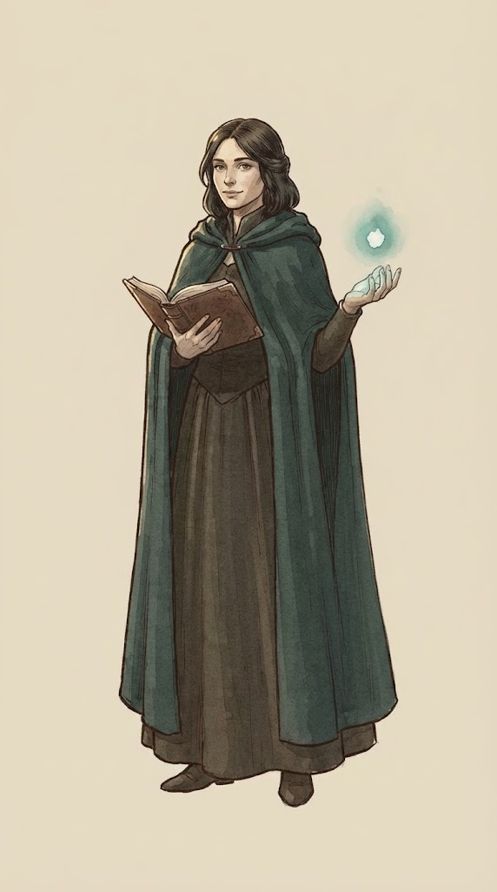
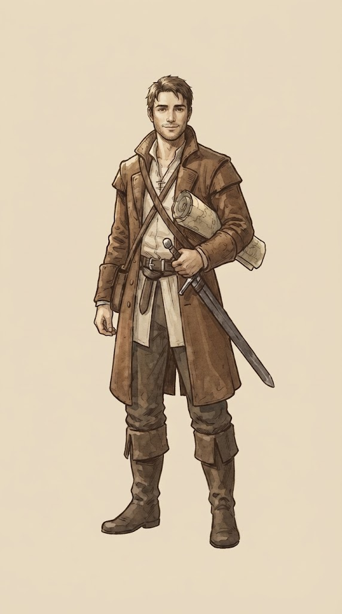

羊皮紙の旅路の画面（たたき台）
オーナーが描いた絵（A-1 と a-set）をそのまま置いた、スマホ1画面のモック。舞台は落ち着いたまま、宝箱の瞬間だけ派手にしている。読み込むと、道が伸びる・封蝋が押される・宝箱が光る動きが1回だけ流れる。
ホーム 歩いた分だけ道が伸びる
10月6日（月）旅の四十三日目
7,200歩
きょう歩いた分
迷いの森まで あと 800歩


封蝋の記録
12日つづけて （うち救済1日）
木曜は広告で戻した日。数は続き、印は薄い蝋で残る。
出発する
宝箱 ふつう 光は控えめ、すぐ受け取れる
宝箱 レジェンダリー 金の光・しぶき・封蝋・金箔
戦闘 踏み込み・揺れ・閃き・数字が跳ねる（自動で進む）
迷いの森の入口3手目
48
31
ハルトの斬りつけ。スライムに 48。
リラの水の術。スライムに 31。
戦闘は自動で進む
結果まで飛ばす
ねらい
- ホームはカードに切らず、旅日記の1ページとして作った。主役は地図の上の道と、その先に手書きで書かれた歩数。
- レア度の色（金・真鍮など）はホームでは使わない。宝箱を開けた瞬間にだけ出てくるので、ご褒美の場面が目立つ。
- 救済で戻した日は、封蝋を薄い蝋の色にして残す。日数は途切れず、記録としては正直に残る。
- 大人向けすぎをやわらげるのは、主人公の若さと笑顔（描き直した絵）と、宝箱の瞬間の楽しさ。画面の地は落ち着いたまま。
このモックで仮のもの
- 宝箱が開く絵（ふたが開いた状態）はまだ無い。閉じた絵に光としぶきを重ねて代わりにしている。
- 装備の絵はまだ無いので、名前と数字だけ。
- 戦闘はモックとして同じ動きを2.4秒ごとにくり返している。本番は1手ずつ進み、HPの減りは戻らない。
- 地図は線で描いた仮のもの。本番は A-1 の地図のような描いた絵に差し替える。